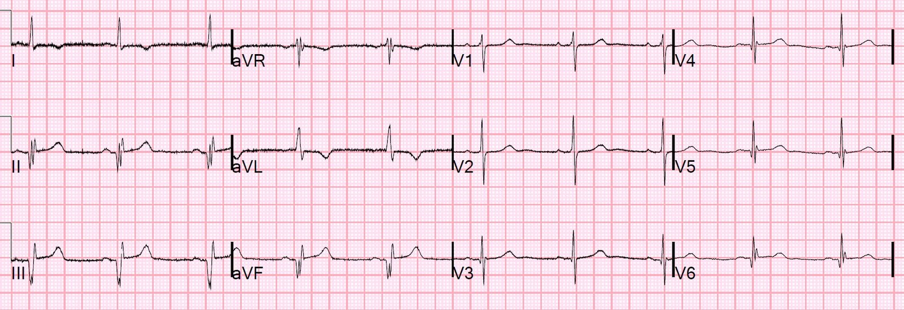
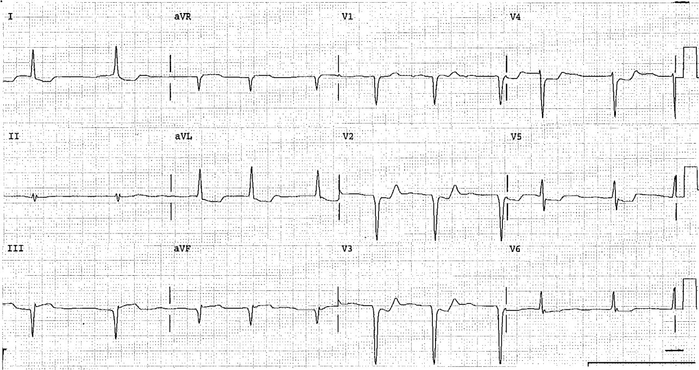
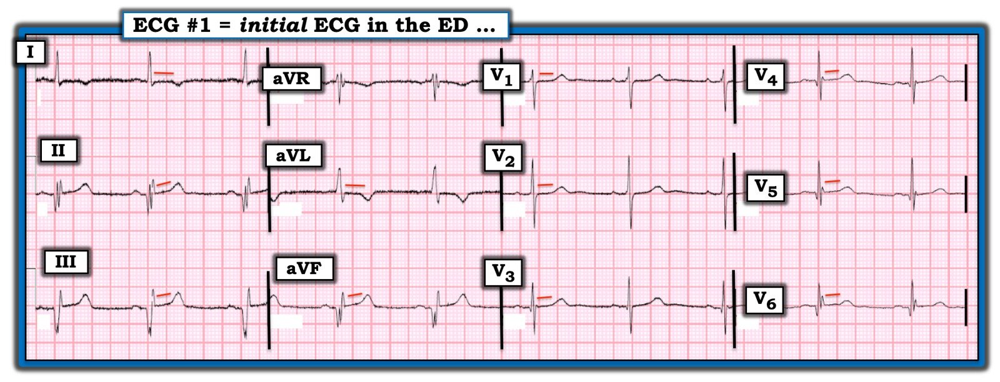

29/11/2019 — Bệnh mạch vành và đau ngực: OMI thành dưới cấp hay nhồi máu cơ tim thành dưới cũ?
Bản dịch tiếng Việt của bài "Coronary Disease and Chest pain: Is it acute inferior OMI or old inferior MI?" – Dr. Smith’s ECG Blog. Giữ nguyên toàn bộ 5 hình ảnh của bản gốc.
Một phụ nữ lớn tuổi có tiền sử nhồi máu cơ tim đến viện vì đau ngực sau xương ức kiểu nóng rát đã 2 giờ.
Đây là điện tâm đồ của bà:


Mô tả điện tâm đồ:
Nhịp xoang. Có sóng Q hình thành rõ (well-formed Q waves) ở các chuyển đạo thành dưới, kèm ST chênh lên rất ít, và ST chênh xuống soi gương ở aVL. STE kèm STD ở aVL là điển hình của OMI thành dưới, đúng không?
Ngoại trừ các sóng Q hình thành rõ, gợi ý một nhồi máu cơ tim thành dưới cũ.
Ngoài ra còn có vùng chuyển tiếp R/S sớm ở các chuyển đạo trước tim, với sóng R lớn ở V2. Điều này cũng gợi ý nhồi máu cơ tim thành sau trước đây. (Bayes de Luna sẽ gọi là “nhồi máu cơ tim thành bên”)
Cũng có sóng Q (sóng qR) ở V3-V6 của nhồi máu cơ tim thành trước cũ.
Điện tâm đồ này là hình ảnh kinh điển của nhồi máu cơ tim thành dưới cũ với ST chênh lên tồn tại kéo dài. Tại sao? Vì các sóng Q hình thành rất rõ, và tiền sử nhồi máu cơ tim.
Phân biệt nhồi máu cơ tim thành dưới cấp với nhồi máu cơ tim thành dưới cũ
Không có cách nào thật tốt để phân biệt OMI thành dưới cấp có sóng Q với nhồi máu cơ tim thành dưới cũ có ST chênh lên tồn tại kéo dài. Chúng có thể trông giống nhau một cách đáng kinh ngạc, vì vậy tìm các điện tâm đồ cũ và các thông tin tiền sử khác là mấu chốt.
Mặt khác, phình thành trước (ST chênh lên tồn tại kéo dài sau nhồi máu cơ tim cũ) có thể được phân biệt khá tin cậy bằng tỷ số T/QRS.
Xem ca này:
Subtle Anterior STEMI Superimposed on Anterior LV Aneurysm Morphology (STEMI thành trước kín đáo chồng lên hình thái phình thất trái thành trước)
Và nhiều ca khác nữa:
https://drsmithsecgblog.com/search?q=T%2FQRS+ratio+aneurysm (tìm kiếm trên blog: tỷ số T/QRS trong phình thất)
Vậy kế hoạch là gì??
Tìm điện tâm đồ cũ và siêu âm tim trước đây.
Quả thật, các điện tâm đồ trước đây trông giống hệt và bệnh nhân có vô động thành dưới-sau trên siêu âm tim trước đây.
Cơn đau tự hết và bệnh nhân được loại trừ nhồi máu cơ tim bằng troponin.
Vẫn có khả năng bệnh nhân bị đau thắt ngực không ổn định. Tuy nhiên, điểm chính là nếu bà thật sự có thiếu máu cục bộ cấp, thì nó không biểu hiện trên điện tâm đồ. Chỉ có nhồi máu cũ biểu hiện.
Bất kỳ ai có bệnh mạch vành và đau ngực sau xương ức, ngay cả với điện tâm đồ bình thường, đều có khả năng cao bị hội chứng vành cấp (ACS) (nhồi máu cơ tim hoặc đau thắt ngực không ổn định) và cần được xử trí như vậy.
Hãy xem điều gì xảy ra khi bạn không coi trọng đau thắt ngực không ổn định trên lâm sàng:
Beware crescendo angina in patient with known CAD (Hãy cảnh giác với đau thắt ngực tăng dần ở bệnh nhân đã biết có bệnh động mạch vành)
Đây là một ca phình thật thành dưới-sau khác, in lại từ sách của tôi:


Không có sóng R lớn ở V1-V3 (điều sẽ được dự đoán khi có nhồi máu cơ tim thành sau cũ). Đó là vì còn có một nhồi máu cơ tim thành trước cũ với sóng Q ở thành trước.
Điều này đã được chứng minh trên siêu âm tim (loạn động tâm trương) và bệnh nhân được loại trừ nhồi máu cơ tim bằng troponin.
Đây là 3 bài trước đây về chủ đề phình thành dưới:
Chest Pain, ST Elevation, and an Elevated Troponin: Should we Activate the Cath Lab? (Đau ngực, ST chênh lên và troponin tăng: Có nên kích hoạt phòng thông tim?)
Pulmonary Edema, Hypertension, and ST Elevation 2 Days After Stenting for Inferior STEMI (Phù phổi, tăng huyết áp và ST chênh lên hai ngày sau đặt stent cho STEMI thành dưới)
Tachycardia must make you doubt an ACS or STEMI diagnosis; put it all in clinical context (Nhịp nhanh phải khiến bạn nghi ngờ chẩn đoán ACS hoặc STEMI; hãy đặt mọi thứ vào bối cảnh lâm sàng)

===================================
BÌNH LUẬN CỦA TÔI, bởi KEN GRAUER, MD (29/11/2019):
===================================
Một ca đơn giản nhưng rất quan trọng của Dr. Smith về việc phân biệt giữa nhồi máu cấp với nhồi máu cũ. Nhiệm vụ này đặc biệt khó trong ca này — vì người phụ nữ lớn tuổi có tiền sử nhồi máu cơ tim trước đây này đến viện với đau ngực sau xương ức mới khởi phát (bắt đầu 2 giờ trước đó). Tôi xin bổ sung những suy nghĩ sau vào phần bình luận của Dr. Smith.
- Để rõ ràng — tôi đã sao lại và đánh dấu điện tâm đồ trong ca này ở Hình 1.


Suy Nghĩ của tôi về Điện tâm đồ #1:
- Định tuổi nhồi máu (dating an infarction) bằng điện tâm đồ là một môn khoa học không hoàn hảo — phụ thuộc nặng nề vào Tiền sử (tức là, “Cơn đau ngực của ông/bà bắt đầu khi nào?” ). Dù vậy — không phải mọi bệnh nhân nhồi máu cơ tim cấp đều có đau ngực — và ngay cả khi có, thường không có một bệnh sử đáng tin cậy về thời điểm triệu chứng bắt đầu. Hơn nữa, nhiều bệnh nhân đến viện vì khó chịu ở ngực — rốt cuộc lại không bị nhồi máu cấp …
- Trên thực tế, điều “tốt nhất” mà chúng ta thường có thể làm khi đọc một điện tâm đồ là nói rằng các thay đổi điện tâm đồ trông “CẤP” (tức là, vừa mới xảy ra, hoặc có lẽ xảy ra không quá vài giờ trước đó) — với “CŨ” (xảy ra vào một thời điểm nào đó trong quá khứ = hơn vài ngày trước, cho tới nhiều tháng hoặc nhiều năm trước đó) — với “BÁN CẤP” hoặc “MỚI ĐÂY” (tức là, xảy ra vào một thời điểm nào đó giữa định nghĩa “cấp” và “cũ” của chúng ta ). Dù vậy, còn có một nhóm bổ sung — đó là, có thể đã có nhồi máu trước đây và rồi chồng lên một nhồi máu cơ tim cũ, là một biến cố cấp mới. Đó là tình huống mà điện tâm đồ trong ca này gợi ý.
- Không phụ thuộc vào tiền sử của bệnh nhân — chúng ta BIẾT rằng đã có nhồi máu cơ tim thành dưới trước đây trên điện tâm đồ #1. Không chỉ mỗi sóng Q thành dưới đều sâu (đặc biệt khi xét đến chiều cao khiêm tốn của sóng R ở các chuyển đạo này) — mà thêm vào đó, các sóng Q này còn rộng (đặc biệt ở chuyển đạo III và aVF) — và, có phân mảnh (khía) rõ rệt ở mỗi chuyển đạo trong 3 chuyển đạo thành dưới này. Trong khi chỉ riêng bất kỳ đặc điểm nào trong 3 đặc điểm này (tức là, sóng Q tăng độ sâu — hoặc — sóng Q tăng độ rộng — hoặc — QRS phân mảnh rõ ràng), nếu thấy ở một hoặc nhiều chuyển đạo trong 3 chuyển đạo thành dưới, đã làm tăng khả năng các sóng Q thành dưới đại diện cho nhồi máu trước đây — thì việc thấy cả 3 đặc điểm này ở mỗi chuyển đạo trong 3 chuyển đạo thành dưới (như chúng ta thấy trong ca này) — khiến gần như chắc chắn rằng đã có nhồi máu cơ tim thành dưới trước đây.
- Có sóng Q ở các chuyển đạo từ V3 đến V6 (Hãy chắc chắn bạn nhận ra rằng sóng lệch ban đầu ở chuyển đạo V3 là một sóng q nhỏ-nhưng-chắc-chắn-có-mặt). Các sóng Q này ở các chuyển đạo ngực trước-bên là không bình thường vì: i) Độ sâu của sóng Q ở chuyển đạo V6 rõ ràng là sâu hơn-mức-mong-đợi một cách không tương xứng đối với một “sóng q vách bình thường”, đặc biệt khi biên độ sóng R ở chuyển đạo này khiêm tốn; ii) Trong khi “sóng q vách bình thường” có thể kéo dài sang tới chuyển đạo V4 — chúng không nên thấy ở chuyển đạo V3 — đặc biệt khi chúng ta thấy sóng R tương đối cao ở chuyển đạo V3; và, iii) Có phân mảnh rõ rệt của phức bộ QRS ở các chuyển đạo V4, V5 và V6. Gộp các điểm này lại gợi ý rằng các sóng Q trước tim mà chúng ta thấy ở các chuyển đạo V4-V6 là hậu quả của nhồi máu cũ thành bên (hoặc trước-bên).
- Như Dr. Smith đã nêu, dấu hiệu vùng chuyển tiếp sớm (tức là, R=S ngay từ chuyển đạo V2, với biên độ sóng R vẫn cao đáng ngạc nhiên ở chuyển đạo lân cận V3) gợi ý mạnh nhồi máu cơ tim thành sau trước đây, đặc biệt khi gần như chắc chắn đã có nhồi máu cơ tim thành dưới trước đây (tức là, thành dưới và thành sau thường có chung nguồn cấp máu).
Các dấu hiệu trên điện tâm đồ #1 gợi ý rằng một biến cố cấp có thể đang xảy ra bao gồm:
- ST chênh lên nhẹ-nhưng-có-thật ở các chuyển đạo thành dưới và các chuyển đạo trước tim phía bên.
- Sóng T nhọn hơn mức bình thường (gần như có đỉnh nhọn) ở mỗi chuyển đạo trong 3 chuyển đạo thành dưới.
- Sóng T đảo ngược hướng ngược lại theo kiểu hình soi gương ở chuyển đạo aVL (chuyển đạo I cũng cho thấy sóng T đảo ngược có hình dạng tương tự nhưng mức độ nhỏ hơn).
Mặt khác — các dấu hiệu điện tâm đồ gợi ý rằng điện tâm đồ #1 thực sự không thể hiện một biến cố cấp đang diễn ra bao gồm:
- Sóng Q đã hình thành rõ ở các chuyển đạo thành dưới và các chuyển đạo trước tim phía bên, đi kèm với phân mảnh rõ rệt ở nhiều phức bộ QRS (tức là, phân mảnh thường là một dấu hiệu lâu dài cho thấy nhồi máu hoặc sẹo đã xảy ra vào một thời điểm nào đó trong quá khứ).
- Đoạn ST thẳng đuỗn rõ ràng (trước khi khởi đầu sóng T) thấy ở nhiều chuyển đạo (Xem các đường ĐỎ nằm ngang, hoặc gần như nằm ngang, được kẻ thẳng trên điện tâm đồ #1).
- Không có ST chênh xuống ở những chuyển đạo có sóng T đảo ngược (đó là chuyển đạo I và aVL).
- Hoàn toàn không có ST chênh xuống ở các chuyển đạo V1, V2 và V3 (ST chênh xuống ở ít nhất 2 trong các chuyển đạo này hầu như luôn hiện diện khi nhồi máu thành sau mới xảy ra gần đây).
ĐIỀU CỐT LÕI: Tôi đã đoán rằng các dấu hiệu trên điện tâm đồ #1 là không cấp — nhưng như Dr. Smith, tôi hoàn toàn không chắc chắn. Sóng T nhọn ở các chuyển đạo thành dưới (kèm sóng T đảo ngược hướng ngược lại ở chuyển đạo aVL) có thể là một thay đổi cấp chồng lên nhồi máu cơ tim thành dưới trước đây …
- Việc tìm được một điện tâm đồ trước đây của bệnh nhân này, cũng như một kết quả siêu âm tim trước đây, hóa ra là vô giá để khẳng định rằng điện tâm đồ #1 không có thay đổi cấp.
- ĐIỂM CUỐI CÙNG: Lý tưởng nhất, bạn sẽ không chỉ tìm được một điện tâm đồ trước đây của bệnh nhân — mà còn đủ thông tin lâm sàng để bảo đảm rằng điện tâm đồ cũ bạn tìm được phản ánh một bản ghi “nền” thực sự (và rằng điện tâm đồ cũ này không được ghi vào thời điểm tái phát một biến cố cấp trước đó)!
Chúng tôi xin CẢM ƠN Dr. Smith đã trình bày ca này!